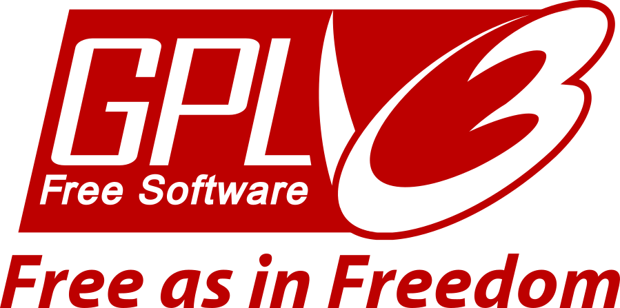

Free and Open Source Software
The philosophy of Free and Open Source Software (FOSS) embodies a set of core principles that have shaped its development and adoption worldwide. At its heart, FOSS champions the idea of freedom: the freedom to use, study, modify, and distribute software
